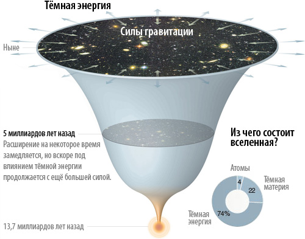
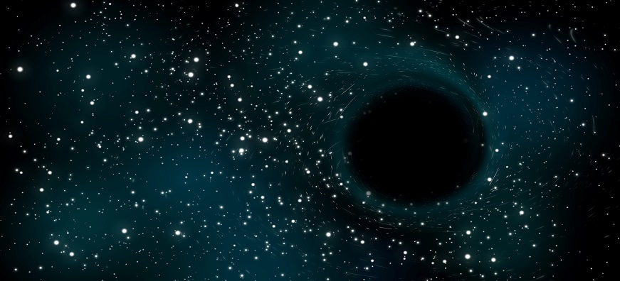

Темная материя теманя энергия
Темная материя и темная энергия - это то, что не видно глазу, однако их присутствие доказано в ходе наблюдений за Вселенной. Миллиарды лет назад наша
Вселенная родилась после катастрофического Большого Взрыва. По мере того, как ранняя Вселенная медленно охлаждалась, в ней начала развиваться жизнь.
В результате сформировались звезды, галактики и остальные видимые ее части. Размеры нашей Вселенной просто ошеломительны. К примеру, одного Солнца
достаточно для освещения и обогрева миллиона планет, аналогичных Земле. При этом Солнце является звездой среднего размера,
а одна только наша галактика состоит из 100 миллиардов звезд. Это количество превышает количество песчинок на небольшом пляже. Однако это еще не все.
Как известно, Вселенная состоит из нескольких миллиардов галактик, где существует самая разная материя. Возможно ли,
чтобы какая-то из этих материй была невидима глазу. Скорее всего, поскольку результаты недавно проведенных исследований
показали, что мы можем видеть лишь десятую часть Вселенной. Значит, более 90% материи человек
просто не способен рассмотреть даже с использованием специального оборудования. Астрономы называют такую материю темной.
Изучение темной материи
Доказательством существования темной материи является ее тяжесть – сила гравитации, которая, словно клей, сохраняет
целостность Вселенной. Все части Вселенной взаимно притягиваются друг к другу. Благодаря этому ученые смогли рассчитать
общую массу видимой Вселенной, а также показатели гравитационных сил. В ходе расчетов был выявлен существенный дисбаланс
в этих параметрах, что дало основание полагать,
что существует некая невидимая материя, обладающая определенной массой и также подверженная воздействию гравитации.

Кроме того, доказательством существования темной материи стало ее гравитационное влияние на другие объекты, в том числе на траекторию
движения звезд и галактик. Было обнаружено, что многие галактики вращаются быстрее, чем ожидалось.
Согласно теории гравитации А. Эйнштйна, они должны разлетаться в разные стороны. Однако что-то невидимое будто удерживает их вместе.
Также темная материя может повлиять на траекторию распространения света. Было исследован феномен гравитационного линзирования, который
состоит в том, что плотные объекты способны отражать свет дальних объектов, меняя траекторию световых потоков. Это приводит к искажению
изображения и возникновению миражей звезд и галактик. Ученые фиксируют эти световые изгибы, но не могут назвать природу этого явления.
Большой взрыв

Многие слышали что наша Вселенная произошла в результате большого взрыва. Так это или нет утверждать определенно
довольно сложно, однако, все существующие астрономические наблюдения подтверждают теорию большого взрыва. В этой статье мы, опираясь на современные
научные теории, попробуем в самых общих чертах описать жизнь Вселенной в первые мгновения своего существования.
Итак, мы знаем, что возраст Вселенной около 13 миллиардов лет, и еще мы знаем, что все это время Вселенная расширялась.
Представим себе тот отдаленный момент, когда Вселенная представляла собой некую сингулярность с температурой 10 в 32 степени
градусов, и плотность 10 в 96 степени килограммов на метр кубический. (Слово сингулярность означает что это что-то непонятное
науке.) Некоторый объект, в котором не работают наши обычные представления о мире.
Можно лишь сказать, что он был очень маленький (возможно порядка атомного ядра), очень горячий и имел очень большую плотность.
По еще не выясненным причинам произошел большой взрыв. Этот непонятный по своим свойствам объект стал с огромной скоростью расширяться.
Произошло рождение нашей Вселенной. В процессе расширения Вселенная остывала, плотность
Вселенной уменьшалась, она меняла свои физические свойства. Рассмотрим более детально первые мгновения после большого взрыва.
Когда возраст Вселенной был меньше 10-37 секунды в ней преобладала квантовая гравитация. А если точнее, все существующие
сейчас взаимодействия действовали как одно общее взаимодействие. Это единое взаимодействие, по всей видимости, подчинялось законам квантовой гравитации.
К сожалению квантовая гравитация еще почти не изучена, поэтому про эту раннюю эпоху мы сказать ничего не можем.
Примерно в возрасте 10-37 секунд, когда температура опустилась до 1026K единое взаимодействие распалось на 4 вида взаимодействия. Гравитационное взаимодействие
стало менее значительным чем другие виды взаимодействия. С этого момента мир уже можно было описывать законами классической, не квантовой гравитации.
Еще немногим позже в возрасте 10-6 секунд, когда температура упала до 1013K появились электроны и кварки. Вещество в таком
состоянии называется кварк-глюонной плазмой. Примечательно, что сейчас в центре Европы, в Женеве запущен в эксплуатацию
ускоритель элементарных частиц. С помощью этого прибора мы
планируем получить эту самую кварк-глюонную плазму, и с помощью нее лучше исследовать первые мгновения жизни Вселенной.
Вернемся к расширению Вселенной. Всего через минуту после большого взрыва образовались
протоны и нейтроны и постепенно стало образовываться ядра гелия и дейтерия. Эти ядра еще
нельзя было назвать атомами, так как существовавшие на тот момент электроны находились в свободном состоянии.
Энергия вещества была столь велика, что все электроны непрерывно излучали и поглощали фотоны. Вселенная
в то время была не прозрачна. Мы легко можем представить себе такую Вселенную, если посмотрим
в топку печки, в тот момент, когда дрова горят так жарко, что видно одно только пламя.
Вид Вселенной кардинально поменялся спустя 400 000 лет. В этот момент энергия уменьшилась настолько, что образовались атомы.
Излучение перестало взаимодействовать с веществом и Вселенная стала прозрачна.
Оставшееся излучение до сих пор наполняет Вселенную – сейчас оно называется реликтовое или фоновое излучение.
Согласно мнению ученых, такие процессы, как разделение единого взаимодействия на 4 вида, образование кварк-глюонной плазмы, появление протонов и
нейтронов, и некоторые другие происходили не постепенно, а почти мгновенно. Такие преобразования называются фазовыми переходами, аналогичным образом,
например, происходит превращение пара в воду при остывании. Благодаря тому, что фазовые переходы происходили очень быстро они оставляли после себя некоторые следы,
такие как фоновое излучение после образования атомов. Именно поэтому нам удается обнаружить доказательства, подтверждающие теорию большого взрыва.
С того самого времени Вселенная была похожа на ту, что мы видим сейчас. Со временем образовались звезды, планеты, в том числе и наша Земля.
Черные дыры

Черные дыры, несомненно, самые странные и загадочные объекты в космосе. Их причудливые свойства могут бросить вызов законам
физики Вселенной и даже природе существующей действительности. Чтобы понять, что же такое черные дыры, мы должны научиться думать
"вне коробки" и применить немного фантазии. Черные дыры образуются из ядер супер массивных звёзд, которые можно охарактеризовать
как область пространства, где огромная масса сосредоточенна в пустоте, и ничего, даже свет не может там избежать гравитационного
притяжения. Это та область, где вторая космическая скорость превышает скорость света. И чем более массивный объект движения,
тем быстрее он должен двигаться для того чтобы избавиться от силы своей тяжести. Это известно как вторая космическая скорость.
Черные дыры настолько массивны, что их вторая космическая скорость быстрее, чем скорость света.
Поскольку ничего не может двигаться быстрее, чем свет, то ничего и не может избежать гравитация черной дыры.
Теория относительности Эйнштейна является первым ключом к пониманию черных дыр. Она утверждает, что
гравитация влияет на время. Чем более массивный объект в космосе, тем больше он замедляет время. Гравитация
же черной дыры настолько огромна, что она практически останавливает ход времени. Если снаружи черной дыры
наблюдать, как падает космический корабль, то можно увидеть, что он все больше и больше замедляется и, в конце концов, исчезает.
Распространенный миф о черных дырах говорит, о том, что они всасывают всю материю вокруг себя. Но, это не так. Они будут
всасывать материю, которая находится на определенном расстоянии, а в остальном они действуют не иначе, чем массивные звезды.
Если, например, наше Солнце станет черной дырой, планеты будут и дальше вращаться по своей орбите, как они это и сегодня.
Самой большой черной дырой во Вселенной является черная дыра, расположенная в центре галактики NGG 1277 в созвездии Персея, находящаяся на расстоянии 228 миллионов св.лет от Земли.